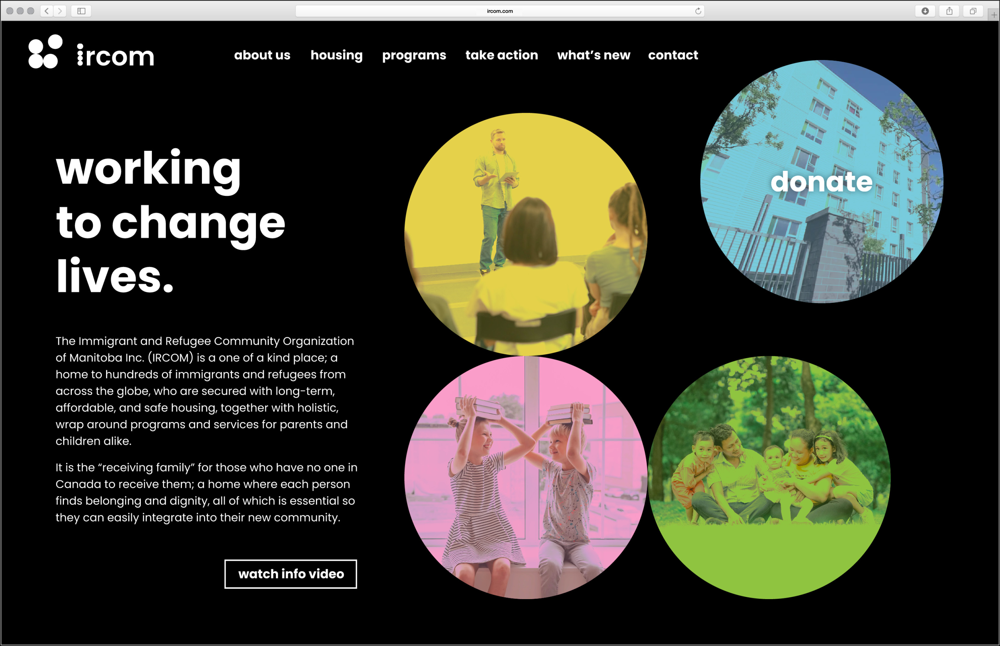

Rebrand of Immigrant and Refugee Community Organization of Manitoba. The goal of this debrand was to implement a design that further included the younger target of the organization. With primarily parents and children taking advantage of the amazing programs and homing at IRCOM, it was imperative to move the brand in a more family friendly direction. In the end a logo symbolizing coming together, and the use of bold beautiful colours and shapes — was exactly what the organization needed.
